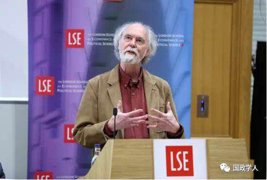

收录于合集 #理论研究 96个

简 介
** 【作者】** Hitomi Koyama，约翰霍普金斯大学政治学博士，原荷兰莱顿大学讲师，2019年4月起担任日本立命馆大学助理教授。
巴里·布赞（Barry Buzan），伦敦政治经济学院（formerly Montague Burton Professor）国际关系荣誉教授；哥本哈根大学、吉林大学和中国外交学院名誉教授。
** **【 编译 】****徐垚晟
** **【 校对 】****杨艺华
** **【 审核 】****蔡 宇
** **【 来源 】****Rethinking Japan in Mainstream International Relations, International Relations of the Asia-Pacific, Volume 19, Issue 2, May 2019, Pages 185–212
** 【期刊】** International Relations of the Asia- Pacific是发表该领域最佳原创性研究的主要国际期刊，于2001年创立，在每年的1月、5月和9月分别有一期文章，文章受到亚太地区内外所有国际关系学者的欢迎。该刊物主要关注亚太地区国家间关系、亚太地区和其他地区间关系、与亚太地区国家有关的国际关系理论等议题。
重思日本 ：主流国际关系理论的偏见
Rethinking Japan in mainstream International Relations

Barry Buzan
内容提要
日本地理位置在东方，但经常被认为是西方国家，过去的一个半世纪中，日本作为世界性大国的角色仍然与主流国际关系理论中所描述的显得很不一致。 为了呈现出一个真实的历史中的日本，作者在本文中以 “现代性(modernity)”为核心逻辑线，对十九世纪以来的日本发展历程进行了重述。 ****通过检验对比日本在历史上经常被低估的财力和权力角色， 作者认为这种状况 揭示了欧洲中心主义和现实主义国际关系理论的局限性 ，这两种理论并没有告诉人们关于日本在世界历史中的真实情况。 这些扭曲的现象表现为三方面： 首先，日本在 1914 年之前的第一轮现代 性发展 中被排除在外或被边缘化； 其次，对日本作为东北亚资本主义发展榜样和枢纽的作用的认识不足；再者， 1945 年后日本在巩固美国超级大国地位和促进亚洲资本主义世界秩序形成方面的关键性作用也被忽略。 **** 从根本上来说，是由于主流国际关系理论对于十九世纪国际关系发展的忽视，所以并没有充分地吸收现代性理论。 ****因此， 为学术界与政策界分析日本这一重要的世界角色提供了有偏差的指导。
文章导读
**1
** 引 言
许多人将明治维新作为日本走向西方的开端和西方——非西方二元体系不稳定的起点。 作者认为，在财力，权力和现代 性发展 方面，日本自 19世纪末以来一直是世界上的主要大国之一。 ****然而，无论在西方国际关系理论，还是非西方和后殖民地国际关系理论的叙述中，日本在国际体系的历史与理论叙述中都处于奇怪的位置。主流国际关系理论困惑于如何将这样一个早期崛起的国家纳入到欧洲中心主义的现代性叙述当中。尽管日本成功地崛起过，但是其通常被排除在西方话语的现代性核心外，而被视作落后且发展停滞的亚洲国家中的例外。日本击败俄国（ 1904—1905）的事迹虽然在当时轰动一时，但是现在在国际关系理论中影响甚微。 作者认为 在这其中，需要剥离欧洲中心主义和现实主义对日本的曲解，才能使人们认清日本。 欧洲中心主义隐含着种族、帝国主义和发展之间的关系，这一直都是国际关系理论和当代全球政治中仍然是争论的焦点。现实主义强调的军事力量的重要性。其中，日本很大程度上脱离了现实主义极性理论 (realistic polarity theory) ，这不仅是因为它缺乏军事力量，还因为日本宪法第9条宣布放弃使用武力解决国际问题和它在安全上对美国的依赖性。 ****因此，作者 按照时间顺序重述国际关系史中现代日本的四个故事，通过剥离欧洲中心主义和现实主义的曲解，展现主流国际关系理论的局限性，表明日本对现代国际关系的影响比人们的普遍认知来的更广泛和更深刻。
●第一，日本是早期现代性国家集团的一部分，这 消解了西方白人与现代性理论之间以欧洲中心主义为核心的联系 。
●第二，作为现代性发展的区域核心，日本在东北亚1945年前的发展中扮演了一个极为重要的角色。由于东亚的发展与国家合法性紧密相关，所以对于日本的前殖民地和西方来说，日本在其中的角色都很尴尬。
●第三，从1902年到1945年，日本作为一个大国发挥了全球性作用，并对世界历史和政治格局产生了巨大而持久的影响。
●第四，自从第二次世界大战的破坏中恢复过来后，日本迅速发挥其作为东亚现代性发展核心的关键作用。它在与美国的共谋和从属中完成了这个目标，并为美国成为全球超级大国提供了重要的经济和意识形态基础。
**2
** 现代性兴起语境下的日本
Japan in the context of emerging modernity
日本是如何参与到十九世纪才开启的现代性发展进程中的呢？作者认为，尽管日本在地理上并不是西方国家，而且离英国相当远，但它显然是19世纪早期现代性国家的核心成员之一。 日本对现代 性格局 构成的外部压力作出迅速反应，并创造了有利于 进行现代性发展 的国内条件。 ****自 19世纪以来，工业技术的发展克服了地理上的限制，这为日本的崛起埋下了伏笔。以英国为起点的发展在十九世纪初期导致了不同区域间的巨大的发展不平衡状态，这开创了今天以现代性为标准的发展中经济体与发达经济体的序列。当时，日本与英国距离遥远又联系甚少，这构成了其发展的劣势。但是这从另一个侧面来说也属于优点。因为日本地处偏僻，所以免于被殖民的命运，辅之以西方大国对其邻居中国更大的兴趣，使得日本获得了较为宽松的外部空间。因此虽然发展进程开启地较晚，日本还是与俄国、意大利、西班牙、奥地利一道成为了第一轮现代性成员国。尽管如此，日本并未融入西方，因为西方人认为只有西欧和北美才具备出现稳定的现代性国家的条件。因此，人们常常会讨论日本到底是个东方国家还是西方国家。 在作者看来，日本与现代性的关系很有力地驳斥了欧洲中心主义关于发展和世界历史的主流描述。 可是 ，对国际关系理论中的欧洲中心主义持批评态度的人士也对日本感到困扰：尽管日本击败俄国是为非西方势力欢呼的缘由，但是日本后来却成为了殖民大国。因此，作者认为，日本早期的现代性发展对于整个西方中心主义的现代性叙述来说是个重大威胁，也开启了后来的关于现代国际体系如何展开的西方与反西方解释之争。总结来说， 日本在第一轮现代 性发展 浪潮中完成 了 转型，并且将那些未能有效应对现代 性 挑战的未被殖民的欧洲国家们甩在了身后，并产生了自己独特的文化与现代性的融合形态，成为亚洲国家的典范。
**
**
**3
** 作为亚洲现代性发展区域核心的日本
Japan as the Regional Core for Asian Modernity
鉴于文化和地理位置的相近，明治维新后的日本迅速成为周边的现代性发展典范，并被中国和韩国的改革者认可。在1870年至1930年间，日本为这些国家的现代性发展提供了相当大的启发和帮助。 一方面，日本将西方殖民体系通行的国际惯例带入东亚，打破了东亚的朝贡模式，使日本成为中韩两国国内改革者学习的模范； 另一方面，日本作为殖民者，以 “ 文明使命”为名向周边国家强行推行现代 性 发展。 ****从这个意义上说，扮演一个模范和强加一种模式之间的界限是很难界定。因此，日本在如何对待与周边和西方国家的关系上陷入了分裂状态。最初，日本对一些欠发达地区进行了文明使命 (civilization mission)式的行动，但是随着反殖民独立运动的兴起，这种模式在一战后发生了改变。日本军部认为下一场全面战争需要有充足且有持续性的资源，这需要日本增强实力。这样的战略使得军部与政府的关系变得格外紧张。这种帝国主义式的发展模式包含两方面的内容：一方面是以追求日本和区域自治为名义来镇压了日本殖民地发生的反殖民运动，另一方面是要建立一个强大日本以保卫自己和亚洲抵御西方大国殖民的纲领。这个发展模式就是下文所说的“大东亚共荣圈”。
尽管日本被当作一个强迫性的、压迫性的殖民国家，但它也为周边各国的现代性奠定了基础。 ****在日本统治时期，中国东北基本上完成了工业化和现代 性发展的。虽然中国人抵制日本的殖民，但是由于东北的发展，大量人口仍然被吸引流入该地区以逃避战乱与饥饿。日本以利己的方式，客观上第二次世界大战以后韩国和台湾作为亚洲四小龙的现代性发展奠定了社会和物质基础。然而，这样做也给他们留下了一个两难的困境，那就是如何将他们的国家合法性与这段历史联系起来。
作者认为，这一故事强调了如何从军事和经济现代 性发展 的角度重述日本对区域现代性发展的作用。 日本在国际关系理论中的被包含或者被忽视，与国际关系对发展本身意 义的界定有关 。 ****
**
**
**4
** 十九世纪末至1945年作为大国的日本
Japan as a great power from late 19th century to 1945
十九世纪末二十世纪初，日本的发展故事很好地与欧洲中心主义&现实主义相契合。与日本对东北亚现代性发展褒贬不一的历史贡献一样，日本作为当时一个正常的大国的形象也因其二十世纪30年代和40年代发起的侵略战争而黯然失色。但作者认为， 尽管日本是帝国主义国家，但它对反殖民主义和反种族主义也作出了一些重大贡献。 ****日本当初明治维新的目标之一是为了摆脱被殖民的命运。因此，在帝国发展初期，日本对内对外都努力遵循 “文明标准”，无论是1894-1895年的中日战争，还是1904-1905年的日俄战争，日本都细心地遵循国际法的规定，以人道方式对待战俘。但是，随后的几场战争使得日本的国际地位空前提升，辅之以日本通过这些战争获得的利益被西方国家强制瓜分了一些，这使得日本作为一个非西方大国的面貌得以显现。日本积极反对不平等条约，19世纪90年代后期撤销了治外法权，1911年取消了关税控制。在一系列的战争胜利的加持下，日本成为了当时全球认可的大国，日本的军事胜利打破了19世纪建立起来的白人力量不可战胜的神话，这激励了全球的反殖民运动（除了被日本殖民的地区）的发展。
同时，日本崛起成为大国的进程也使国际政治中的种族主义问题更加突出。虽然种族平等在当时并不是一项普世的原则（因为日本在希望自己被西方平等对待的同时，也继续实行歧视其亚洲邻国的政策），但是西方对日本的种族歧视威胁到了日本作为大国的地位，因为这种思想把日本放置于西方国家之下，并把日本与西方大国殖民地的非白人臣民放在一起。西方对日本移民的歧视助长了日本政策的反西方转向，为二战期间的地缘政治争端奠定了基础，从而暗含着种族主义的战争意义。 作者认为，非白人与帝国主义这对的看似明显的矛盾体，必须要放置于同一语境下才能理解。 很讽刺的是，日本退出国际联盟的合法性就植根于国际主义本身，即通过建立一个区域集团达至和平，从而摆脱英美的统治。 最终，日本作为帝国的四十年战争以盟军对其城市和工业的破坏以及对其海军和商船的近乎彻底的消灭而告终。广岛和长崎的核爆炸开辟了日本作为受害者而不是施害者的叙述，从而使得日本的大国历史被尘封，并不断使日本推迟正视其与邻国的历史问题。
**5
** 1952年至今：美国主导的资本主义世界秩序的支柱
1952-present:a pillar of the US-led capitalist world order
1945年以后，日本从大国的序列中消失，也从除了国际政治经济学以外的大多数的国际关系主流理论中消失。从现实主义的角度来看，日本是美国的一个次要盟友的观点，与欧洲中心主义世界政治观的主张相呼应。日本被“轻视”的唯一例外，发生于20世纪90年代早期和中期。当时日本强劲的经济增长将日本视为美国超级大国地位的可能挑战者。随着日本经济的停滞，这股风潮迅速消退。
从物质角度来看，美国当然仍然是世界上最主要的力量，但同样重要的是它的社会地位，这种因素往往在现实主义的唯物主义视角中被边缘化。 美国超级大国地位的真正关键在于，国际体系下两个最大的资本和技术中心（欧洲和日本）从属于美国主导的联盟。 ****因此，美国既在世界经济基本原则的基础上 巩固了民主/资本主义的意识形态共识，又阻止了一个反对美国的联盟的形成。
作者认为日本对西方在冷战中的胜利和资本主义对计划经济的胜利都是至关重要的，也塑造了后冷战时期的世界。 ****在这一框架内，作者认为日本的经济成功，以及恢复其先前作为东亚发展典范和枢纽的重要作用，都是重要的。日本不仅推动亚洲四小龙的发展，同时也击溃了通过计划经济达至现代性的路径，再次成为中国改革开放的榜样。
综上所述 ， 作者指出 日本在冷战结束时发挥了非常重要的意识形态和经济作用，并在较小程度上发挥了军事作用。 **** 日本作为资本主义国家发展的另一个典范，是过去和现在都是支撑美国超级大国地位的关键支柱之一。 **** 日本的成功发展不仅使苏联及其模式 相形见拙 ，而且促进了资本主义在整个亚洲的传播。
**6
** 日本与向后西方世界秩序的过渡？
Japan and the transition to a post-western world order？
未来几十年日本在国际秩序中的地位将受到中国和美国冲突与合作的影响。作者认为，尽管中日关系对渴望在亚洲拥有领导地位的中国来说至关重要，但日本不能寄希望于中日历史问题得到快速和解。反之，日本现在必须考虑其与中国经济关系的安全后果。同印度、东南亚和澳大利亚这些邻国一样，日本可能会尝试与中国接触并采取对冲战略，加强彼此之间的合作，并努力让美国站在他们一边。但是，如果中国通过更少地威胁日本来巧妙地发挥其作用，同时美国不断削弱其与盟友间的信任，那么日本可能不得不考虑与中国合作或采取独立立场。任何一种情况都会使得美国的超级大国的地位被削弱。尽管日本相对衰落，但日本仍然能对全球财富和权力结构产生重大影响。
**7
** 结 论
Conclusions
在认识到欧洲中心主义和现实主义理论的局限性后，我们似乎找到了几种关于日本形象被歪曲的解释：
1、 种族主义和欧洲中心主义似乎解释了为什么承认日本为第一轮现代 性 成员之一是困难的。 因为在东方主义的语境中，东方被默认为为“停滞”的，这使得日本被看作为东方历史发展中的反常例子。
2、 **日本 20世纪30年代和40年代的灾难性行为，以及国际关系理论对国际主义与帝国主义之间关联的忽视，似乎可以解释国际关系理论忽略了日本在两次世界大战间作为正常国家的存在的原因。**加之国际政治经济学从属于现实主义的地位，这就解释了为何日本作为东北亚发展模范和枢纽的重要性会被忽视。1945年后的共识认为发展是一种普遍的利益，值得注意的是，这一共识在对日本殖民主义及其发展贡献的评估时处于完全否定和完全肯定之间。
3、作者提出关于日本在冷战时期和之后的被边缘化现象的四种解释。 第一个是新现实主义，特别是极性理论 ( polarity theory ) ，由于它强调军事力量和独立外交政策的重要性，日本因此被低估。 第二个是美国中心主义 ，它倾向于认为日本和欧洲更多地依赖于美国的超级大国地位，而不是美国的超级大国地位来自于二者的组成与支撑。 第三是大多数主流国际关系理论对经济力量的低估 ，其中失败之处在于，未能将日本在第一轮现代性发展中的地位，以及它作为东北亚早期发展模式和枢纽所发挥的作用，与其在东亚资本主义蓬勃发展中的关键作用联系起来。 第四个是日本对自身及其历史认知上的分歧 ，这意味着日本在讲述自己的故事时几乎不能在世界其他国家引起反响。
日本作为第一个非西方现代性大国的故事应该得到应有的突出和关注。在明治维新150周年之际，重新思考日本，更需要重新思考西方国际关系理论的偏见以及非西方发展路径的潜力。
_ ** _ 本文由国政学人平台编译推荐**
更多阅读
【重磅速递】约瑟夫·奈：美国霸权的兴衰：从威尔逊到特朗普 | 国政学人
【重磅推荐】巴里·布赞：英国学派视角下的中国崛起 | 国政学人
【重磅速递】米尔斯海默：注定失败：自由主义国际秩序的兴衰 | 国政学人
【百年国关】历史在国际社会中的应用：从巴黎和会到现在 | 国政学人
【国际组织】IO杂志：联合国维和行动的武力运用问题研究 | 国政学人
【国际秩序】为什么自由主义国际秩序理念将美国外交政策引入歧途？| 国政学人
【关系理论】“关系”：世界政治关系理论的中国话语 | 国政学人
【英国学派】张勇进：中国与全球国际社会中的自由主义等级制：实力与对规范变迁的协商 | 国政学人
【地区秩序】论经济实力的可转化性：中国经济崛起与东亚安全秩序 | 国政学人
【中俄关系】不得已的伙伴：系统-单元动态与中俄关系 | 国政学人
【IPE研究】美国对外贸易政策的“1934年体制”是如何形成的？| 国政学人
【现实主义】斯蒂芬·沃尔特：傲慢的终结与美国克制的新时代 | 国政学人
【理论批判】系统、层次与结构理论：沃尔兹的理论并非系统理论 | 国政学人
【外交政策】单极体系下的不和平状态与美国外交政策 | 国政学人
【欧洲研究】资本主义多样性与合规：加入欧盟后中东欧的经济改革 | 国政学人
【理论研究】吴建树：权力、道德、均势、联盟与摩根索——汉斯·摩根索的经典现实主义思想再解读
【友谊国关】将友谊重新引入国际关系：从中国到西方的关系本体论
【定量研究】政党实力和经济增长（Party Strength and Economic Growth）| 国政学人